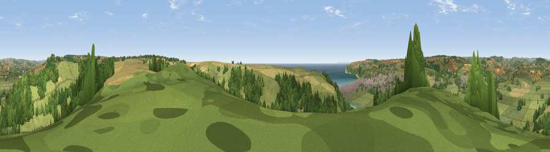

Viewpoint near Axmouth
#3401 in England · top 10% of its area beats it · near AxmouthWhere it is
The exact computed spot (SY 26338 91400). Click the marker for map links.
The view, rendered

A 360° render of this exact spot computed from the terrain model, tree cover and land cover — summer colours, afternoon light, calibrated against photographs of famous viewpoints. Real trees, hedges and buildings will differ in detail.
The panorama
Grey silhouette: terrain skyline in each direction (720 bearings, Earth curvature and refraction included). Dashed green: skyline with trees (+15 m) and buildings (+8 m) as obstacles. Blue strip: how far the ground is visible on each bearing.
Where the view opens
Wedge length = distance to the farthest visible ground on that bearing (vegetation-aware). Rings at 10, 25 and 50 km.
What fills the view
50% grassland · 31% woodland · 9% cropland · 5% built-up · 3% water · 1% wetland
Angular shares of the visible panorama (visual magnitude), not map area. Landscape diversity 0.54 (0–1 Shannon).
Key numbers
More beautiful places nearby
The staircase of upgrades: each row has a higher view potential than everything closer. Driving times are estimates from straight-line distance, calibrated against real road routing — check an actual route before setting out.
| Place | Direction | Drive | Score |
|---|---|---|---|
| Viewpoint near Axmouth | SE · 2 km | ~5 min | 78.5 |
| Viewpoint near Axmouth | SE · 3 km | ~7 min | 78.6 |
| Viewpoint near Axmouth | ESE · 3 km | ~7 min | 82.4 |
| Golden Cap | E · 14 km | ~26 min | 88.7 |
| The Knoll | E · 27 km | ~44 min | 91.0 |
50.71754, -3.04480 · source: screening · position refined by local search. Computed location — check access rights before visiting.